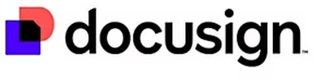

| The Microsoft Brief · Executive · All industries |
|
|
The Microsoft Brief · Executive
Four decisions for leaders this week
|
|
3-min read · 700 words The big picture: AI is moving from pilots to payroll. This week Microsoft showed how to measure what AI returns, how to manage agents as colleagues, and how to cap what they cost. |
| |
In 90 seconds| 1 | Judge AI by what it returns, not how much it is used. Pick the two or three outcomes your AI spend must move this year. | | 2 | Personal agents are becoming colleagues with a manager. Decide who may sponsor an agent and how often each one is reviewed. | | 3 | See what every agent costs, and set a ceiling. Require a cost-per-outcome target and a budget cap for every production agent. | | 4 | Let agents use business data only within existing permissions. Name an owner for each business process an agent may act on. |
|
|
Four decisions that matter |
| | Judge AI by what it returns, not how much it is usedWhat changed: Microsoft's IT team now tracks return on token spend: business value delivered divided by the AI usage it took. What it's worth: Cost: usage-based AI bills grow with enthusiasm, not headcount. A return measure keeps spend pointed at outcomes. | CFO lens: Ask for value per AI dollar by team, not adoption charts. |
What to decide: Pick the two or three outcomes your AI spend must move this year. Source: Microsoft Inside Track, Nov 19, 2026 |
|
| | Personal agents are becoming colleagues with a managerWhat changed: Microsoft is rolling out Autopilot in phases. Each personal agent gets its own identity, mailbox and storage, and reports to its sponsor. What it's worth: Talent: agents take on ongoing follow-up work, so people spend more time on judgment and customers. | CHRO lens: Agents now sit in the org chart; decide who sponsors them and how. |
What to decide: Decide who may sponsor an agent and how often each one is reviewed. Source: Microsoft Inside Track, Nov 19, 2026 |
|
| | See what every agent costs, and set a ceilingWhat changed: Microsoft Foundry now shows cost by project, agent and model, explains why spend changed, and can cap budgets down to one conversation (preview). What it's worth: Cost: a costly change is caught the same day, not on the month-end invoice. | CIO lens: Set a target cost per outcome before each agent goes live. |
What to decide: Require a cost-per-outcome target and a budget cap for every production agent. Source: Microsoft Foundry Blog, Nov 18, 2026 |
|
| | Let agents use business data only within existing permissionsWhat changed: Copilot and agents can now work with Dynamics 365 and Power Platform data, and act only within each user's existing permissions. What it's worth: Risk: agents gain business context without anyone getting access they did not already have. | CISO lens: Review who can see what in your business apps before agents arrive. |
What to decide: Name an owner for each business process an agent may act on. Source: Microsoft Dynamics 365 Blog, Nov 18, 2026 |
|
Proof point · Docusign |
|  | | 90% lower AI processing costs |
Docusign cut AI processing costs by 90%Docusign runs its AI workloads on Microsoft Foundry and reports 90% lower AI processing costs. |
|
A question to ask your team this weekWhich three outcomes should our AI spend move this year, and how will we know? |
|
|
Pass it on. Most leaders send the one decision that matters to their staff. Tap Send to my team and your email opens with a short note and the link. Forwarded to you? Tap below and we'll add you to the next edition. We never add anyone who hasn't asked. |
|
How this Brief was made
AI agents in Microsoft 365 Copilot Cowork found this week's public updates and framed them for executives. A person reviewed it before it was sent. |
|
 | | The Brief |
|
All information is publicly available from Microsoft. You're receiving this because you opted in with your work email. Executive version.
Manage preferences · Switch to the full edition · Unsubscribe (reply STOP) · Privacy
Made with Microsoft Copilot Cowork + Power Platform
Curated by Nick Fratello, Microsoft · Connect on LinkedIn
Microsoft Corporation, One Microsoft Way, Redmond, WA 98052 |
|